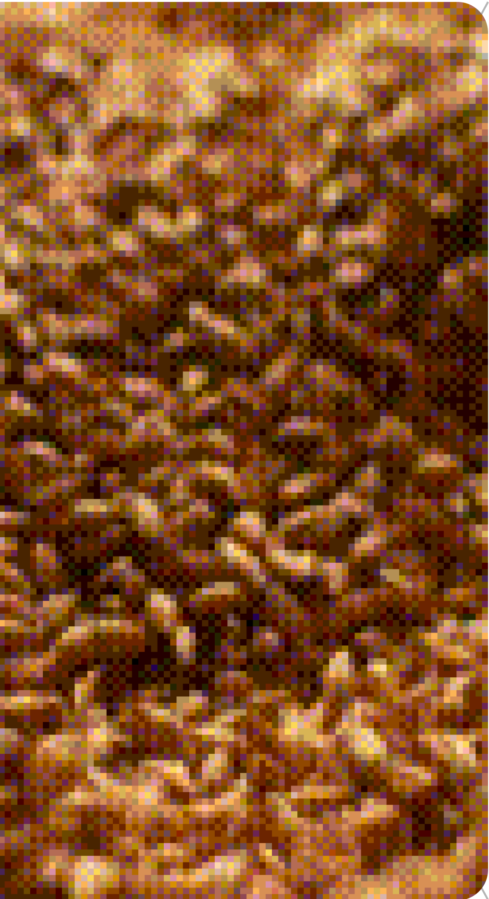

Nueva Club Colombia
Doble Malta
Lo mejor de aquí

Malta Pilsen colombiana
Es la que le aporta suavidad y refrescancia.
Botella
Lata
Lo mejor de allá
Malta Múnich alemana
Le aporta esa espuma única y cremosa.